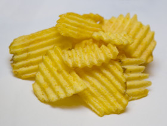
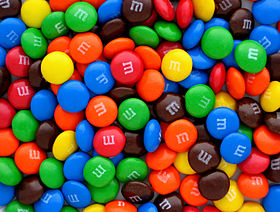

<!DOCTYPE html>
<html>
  <head>
    <title>My experiment</title>
    <script src="js/jsPsych-6.0.5/jspsych.js"></script>
    <script src="js/jsPsych-6.0.5/plugins/jspsych-html-keyboard-response.js"></script>
    <script src="js/jsPsych-6.0.5/plugins/jspsych-image-keyboard-response.js"></script>
    <link rel="stylesheet" href="js/jsPsych-6.0.5/css/jspsych.css"></link>
    <link rel='stylesheet' type='text/css' href='style.css'>
  </head>
  <body></body>
  <script>

    /* create timeline */
    var timeline = [];

    /* define welcome message trial */
    var welcome_block = {
      type: "html-keyboard-response",
      stimulus: "Welcome to the experiment. Press any key to begin."
    };
    timeline.push(welcome_block);

    /* define instructions trial */
    var instructions = {
      type: "html-keyboard-response",
      stimulus: "<p>In this experiment, the screen will change colour " +
          ".</p><p>If the screen is <span class='cue' id='cue-a'>blue</span>, " +
          "press the letter M on the keyboard as fast as you can to win crisps.</p>" +
          "<p>If the screen is <span class='cue' id='cue-b'>orange</span>, press the letter Z " +
          "as fast as you can to win M&Ms.</p>" +
          "<div class='example'>"+
          "<div class='example-a'></img>" +
          "<p class='small'><strong>Press the M key</strong></p></div>" +
          "<div class='example-b'></img>" +
          "<p class='small'><strong>Press the Z key</strong></p></div>" +
          "</div>"+
          "<p>Press any key to begin.</p>",
      post_trial_gap: 2000
    };
    timeline.push(instructions);

    /* test trials */

    var learn_stimuli = [
      { stimulus: "<div class='prime-a'>a</div>", outcome: 'img/crisps.jpg', data: { test_part: 'test', correct_response: 'm' } },
      { stimulus: "<div class='prime-b'>b</div>", outcome: 'img/mandm.jpg', data: { test_part: 'test', correct_response: 'z' } }
    ];

    var fixation = {
      type: 'html-keyboard-response',
      stimulus: '<div style="font-size:60px;">+</div>',
      choices: jsPsych.NO_KEYS,
      trial_duration: 250,
      data: {test_part: 'fixation'}
    }
    
    var outcome = {
      type: 'image-keyboard-response',
      stimulus: jsPsych.timelineVariable('outcome'),
      choices: jsPsych.NO_KEYS,
      trial_duration: 1000,
      data: {test_part: 'outcome'}
    }

  var if_node = {
      timeline: [outcome],
      conditional_function: function(){
          // get the data from the previous trial,
          // and check which key was pressed
          var data = jsPsych.data.get().last(1).values()[0];
          if(data.correct){
              return true;
          } else {
              return false;
          }
      }
  }

    var learn = {
      type: "html-keyboard-response",
      stimulus: jsPsych.timelineVariable('stimulus'),
      choices: ['m', 'z'],
      data: jsPsych.timelineVariable('data'),
      on_finish: function(data){
        data.correct = data.key_press == jsPsych.pluginAPI.convertKeyCharacterToKeyCode(data.correct_response);
      },
    }

    var learn_procedure = {
      timeline: [learn, if_node],
      timeline_variables: learn_stimuli,
      repetitions: 5,
      randomize_order: true
    }
    timeline.push(learn_procedure);

    /* define debrief */

    var debrief_block = {
      type: "html-keyboard-response",
      stimulus: function() {

        var trials = jsPsych.data.get().filter({test_part: 'test'});
        var correct_trials = trials.filter({correct: true});
        var accuracy = Math.round(correct_trials.count() / trials.count() * 100);
        var rt = Math.round(correct_trials.select('rt').mean());

        return "<p>You responded correctly on "+accuracy+"% of the trials.</p>"+
        "<p>Your average response time was "+rt+"ms.</p>"+
        "<p>Press any key to complete the experiment. Thank you!</p>";

      }
    };
    timeline.push(debrief_block);

    /* start the experiment */
    jsPsych.init({
      timeline: timeline,
      on_finish: function() {
        jsPsych.data.displayData();
      }
    });
  </script>
</html>
